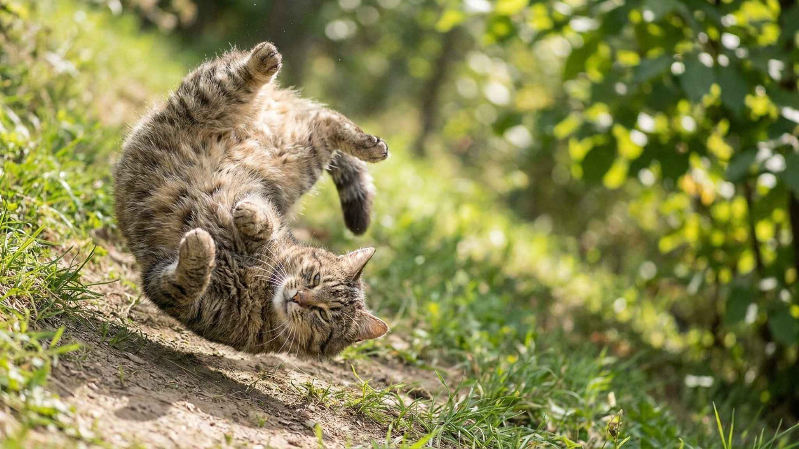

Кошка плюхается перед вами на спину, растягивается и открывает живот. Рука уже тянется — и в ту же секунду кошка хватает её лапами и кусает. Знакомо? Это не предательство и не «странность»: кошка сказала одно, а вы услышали другое. Разбираем, что на самом деле означает этот жест и как на него правильно реагировать.
🐾 Не уверены, что это опасно?
Опишите симптом в AnimaLife — AI-ветеринар за минуту подскажет, что в пределах нормы, а когда пора к врачу.
Живот — самое уязвимое место кошки. Открывая его, кошка демонстрирует, что чувствует себя в безопасности рядом с вами. Это жест доверия и расслабления, а не просьба о поглаживании. Кошка говорит: «Мне хорошо, я спокойна, я тебе доверяю» — а не «погладь меня вот здесь».
Важно понимать: для кошки открытый живот — это заявление о статусе отношений, сигнал комфорта. Ответить на него правильно — значит принять этот сигнал, а не немедленно лезть руками.
У кошек есть врождённый защитный рефлекс: при касании живота лапы смыкаются, зубы включаются автоматически. Это не агрессия и не злой умысел — это инстинкт, работающий быстрее, чем мысль. Его называют «ловушкой живота» (belly trap). Даже если кошка хочет контакта, её тело реагирует раньше, чем она «решает» укусить.
Игра. Кошка в игровом настроении ложится на спину, чтобы атаковать игрушку или вашу руку лапами. Уши вперёд, зрачки немного расширены, хвост слегка шевелится. Здесь она хочет именно взаимодействия — но лапами, не поглаживания живота. Дайте игрушку на верёвке, и она будет счастлива.
Приглашение к вниманию. Кошка смотрит на вас, мяукает или мурлычет и при этом переворачивается. Она хочет контакта — но, скорее всего, это запрос на почёсывание за ушами, под подбородком, у основания хвоста. Не на живот.
Терморегуляция. В жару кошки ложатся на спину на прохладную поверхность, чтобы отдать тепло через живот — там шерсть тоньше. В этом случае кошка просто греется снаружи или охлаждается изнутри, и контакт ей совсем не нужен.
🐾 Питомец ведёт себя странно?
AnimaLife расшифрует поведение кошки и собаки и подскажет, что делать. Попробуйте бесплатно прямо в мессенджере.
🐾 Понравился разбор?
Подпишитесь на канал — каждый день разбираем по одному тревожному симптому у кошек и собак: что в пределах нормы, а когда пора к врачу. Подпишитесь, чтобы не пропустить разбор, который может спасти здоровье вашего питомца.
Кошка, которая ложится перед вами на спину — это кошка, которой хорошо рядом с вами. Самый точный ответ на это доверие — не нарушать его.
Материал носит информационный характер и не заменяет очную консультацию ветеринара.